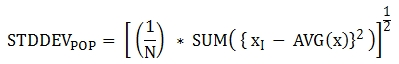
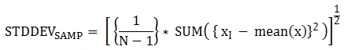
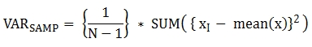

Aggregate/Analytic Functions
Overview
Aggregate/Analytic function is used when you want to analyze data and extract some results.
Aggregate function returns the grouped results and it returns only the columns which are grouped.
Analytic function returns the grouped results, but it includes the ungrouped columns, so it can return multiple rows for one group.
For examples, aggregate/analytic function can be used to get the answers as follows.
What is the total sales amount per year?
How can you display the sales amount from the highest one’s month by grouping each year?
How can you display the accumulated sales amount as annual and monthly order by grouping each year?
You can answer for No. 1 with aggregate function. for No. 2 and No. 3, you can answer with analytic function. Above questions can be written as following SQL statements.
Below is the table which stores the sales amounts per month of each year.
CREATE TABLE sales_mon_tbl (
yyyy INT,
mm INT,
sales_sum INT
);
INSERT INTO sales_mon_tbl VALUES
(2000, 1, 1000), (2000, 2, 770), (2000, 3, 630), (2000, 4, 890),
(2000, 5, 500), (2000, 6, 900), (2000, 7, 1300), (2000, 8, 1800),
(2000, 9, 2100), (2000, 10, 1300), (2000, 11, 1500), (2000, 12, 1610),
(2001, 1, 1010), (2001, 2, 700), (2001, 3, 600), (2001, 4, 900),
(2001, 5, 1200), (2001, 6, 1400), (2001, 7, 1700), (2001, 8, 1110),
(2001, 9, 970), (2001, 10, 690), (2001, 11, 710), (2001, 12, 880),
(2002, 1, 980), (2002, 2, 750), (2002, 3, 730), (2002, 4, 980),
(2002, 5, 1110), (2002, 6, 570), (2002, 7, 1630), (2002, 8, 1890),
(2002, 9, 2120), (2002, 10, 970), (2002, 11, 420), (2002, 12, 1300);
What is the total sales amount per year?
SELECT yyyy, sum(sales_sum)
FROM sales_mon_tbl
GROUP BY yyyy;
yyyy sum(sales_sum)
=============================
2000 14300
2001 11870
2002 13450
How can you display the sales amount from the highest one’s month by grouping each year?
SELECT yyyy, mm, sales_sum, RANK() OVER (PARTITION BY yyyy ORDER BY sales_sum DESC) AS rnk
FROM sales_mon_tbl;
yyyy mm sales_sum rnk
====================================================
2000 9 2100 1
2000 8 1800 2
2000 12 1610 3
2000 11 1500 4
2000 7 1300 5
2000 10 1300 5
2000 1 1000 7
2000 6 900 8
2000 4 890 9
2000 2 770 10
2000 3 630 11
2000 5 500 12
2001 7 1700 1
2001 6 1400 2
2001 5 1200 3
2001 8 1110 4
2001 1 1010 5
2001 9 970 6
2001 4 900 7
2001 12 880 8
2001 11 710 9
2001 2 700 10
2001 10 690 11
2001 3 600 12
2002 9 2120 1
2002 8 1890 2
2002 7 1630 3
2002 12 1300 4
2002 5 1110 5
2002 1 980 6
2002 4 980 6
2002 10 970 8
2002 2 750 9
2002 3 730 10
2002 6 570 11
2002 11 420 12
How can you display the accumulated sales amount as annual and monthly order by grouping each year?
SELECT yyyy, mm, sales_sum, SUM(sales_sum) OVER (PARTITION BY yyyy ORDER BY yyyy, mm) AS a_sum
FROM sales_mon_tbl;
yyyy mm sales_sum a_sum
====================================================
2000 1 1000 1000
2000 2 770 1770
2000 3 630 2400
2000 4 890 3290
2000 5 500 3790
2000 6 900 4690
2000 7 1300 5990
2000 8 1800 7790
2000 9 2100 9890
2000 10 1300 11190
2000 11 1500 12690
2000 12 1610 14300
2001 1 1010 1010
2001 2 700 1710
2001 3 600 2310
2001 4 900 3210
2001 5 1200 4410
2001 6 1400 5810
2001 7 1700 7510
2001 8 1110 8620
2001 9 970 9590
2001 10 690 10280
2001 11 710 10990
2001 12 880 11870
2002 1 980 980
2002 2 750 1730
2002 3 730 2460
2002 4 980 3440
2002 5 1110 4550
2002 6 570 5120
2002 7 1630 6750
2002 8 1890 8640
2002 9 2120 10760
2002 10 970 11730
2002 11 420 12150
2002 12 1300 13450
Aggregate vs. Analytic
Aggregate function returns one result based on the group of rows. When the GROUP BY clause is included, a one-row aggregate result per group is returned. When the GROUP BY clause is omitted, a one-row aggregate result for all rows is returned. The HAVING clause is used to add a condition to the query which contains the GROUP BY clause.
Most aggregate functions can use DISTINCT, UNIQUE constraints. For the GROUP BY … HAVING clause, see GROUP BY … HAVING Clause.
Analytic function calculates the aggregate value based on the result of rows. The analytic function is different from the aggregate function since it can return one or more rows based on the groups specified by the <partition_by_clause> after the OVER clause (when this clause is omitted, all rows are regarded as a group).
The analytic function is used along with a new analytic clause, OVER, for the existing aggregate functions to allow a variety of statistics for a group of specific rows.
function_name ([<argument_list>]) OVER (<analytic_clause>)
<analytic_clause>::=
[<partition_by_clause>] [<order_by_clause>]
<partition_by_clause>::=
PARTITION BY value_expr[, value_expr]...
<order_by_clause>::=
ORDER BY { expression | position | column_alias } [ ASC | DESC ]
[, { expression | position | column_alias } [ ASC | DESC ] ] ...
<partition_by_clause>: Groups based on one or more value_expr. It uses the PARTITION BY clause to partition the query result.
<order_by_clause>: defines the data sorting method in the partition made by <partition_by_clause>. The result can be sorted with several keys. When <partition_by_clause> is omitted, the data is sorted within the overall result sets. Based on the sorting order, the function is applied to the column values of accumulated records, including the previous values.
The behavior of a query with the expression of ORDER BY/PARTITION BY clause which is used together after the OVER clause is as follows.
ORDER BY/PARTITION BY <expression with non-constant> (ex: i, sin(i+1)): The expression is used to do ordering/partitioning.
ORDER BY/PARTITION BY <constant> (ex: 1): Constant is considered as the column position of SELECT list.
ORDER BY/PARTITION BY <constant expression> (ex: 1+0): Constant is ignored and it is not used to do ordering/partitioning.
Analytic functions which “ORDER BY” clause must be specified in OVER function
The below functions require ordering; therefore, “ORDER BY” clause must be specified inside OVER function. In the case of omitting “ORDER BY” clause, please note that an error occurs or proper ordering is not guaranteed.
AVG
- AVG([ DISTINCT | DISTINCTROW | UNIQUE | ALL ] expression) OVER (<analytic_clause>)
The AVG function is used as an aggregate function or an analytic function. It calculates the arithmetic average of the value of an expression representing all rows. Only one expression is specified as a parameter. You can get the average without duplicates by using the DISTINCT or UNIQUE keyword in front of the expression or the average of all values by omitting the keyword or by using ALL.
- param expression:
Specifies an expression that returns a numeric value. An expression that returns a collection-type data is not allowed.
- param ALL:
Calculates an average value for all data (default).
- param DISTINCT,DISTINCTROW,UNIQUE:
Calculates an average value without duplicates.
- rtype:
DOUBLE
The following example shows how to retrieve the average number of gold medals that Korea won in Olympics in the demodb database.
SELECT AVG(gold)
FROM participant
WHERE nation_code = 'KOR';
avg(gold)
==========================
9.600000000000000e+00
The following example shows how to output the number of gold medals by year and the average number of accumulated gold medals in history, acquired whose nation_code starts with ‘AU’.
SELECT host_year, nation_code, gold,
AVG(gold) OVER (PARTITION BY nation_code ORDER BY host_year) avg_gold
FROM participant WHERE nation_code like 'AU%';
host_year nation_code gold avg_gold
=======================================================================
1988 'AUS' 3 3.000000000000000e+00
1992 'AUS' 7 5.000000000000000e+00
1996 'AUS' 9 6.333333333333333e+00
2000 'AUS' 16 8.750000000000000e+00
2004 'AUS' 17 1.040000000000000e+01
1988 'AUT' 1 1.000000000000000e+00
1992 'AUT' 0 5.000000000000000e-01
1996 'AUT' 0 3.333333333333333e-01
2000 'AUT' 2 7.500000000000000e-01
2004 'AUT' 2 1.000000000000000e+00
The following example is removing the “ORDER BY host_year” clause under the OVER analysis clause from the above example. The avg_gold value is the average of gold medals for all years, so the value is identical for every year by nation_code.
SELECT host_year, nation_code, gold, AVG(gold) OVER (PARTITION BY nation_code) avg_gold
FROM participant WHERE nation_code LIKE 'AU%';
host_year nation_code gold avg_gold
==========================================================================
2004 'AUS' 17 1.040000000000000e+01
2000 'AUS' 16 1.040000000000000e+01
1996 'AUS' 9 1.040000000000000e+01
1992 'AUS' 7 1.040000000000000e+01
1988 'AUS' 3 1.040000000000000e+01
2004 'AUT' 2 1.000000000000000e+00
2000 'AUT' 2 1.000000000000000e+00
1996 'AUT' 0 1.000000000000000e+00
1992 'AUT' 0 1.000000000000000e+00
1988 'AUT' 1 1.000000000000000e+00
COUNT
- COUNT(*) OVER (<analytic_clause>)
- COUNT([DISTINCT | DISTINCTROW | UNIQUE | ALL] expression)
- COUNT([DISTINCT | DISTINCTROW | UNIQUE | ALL] expression) OVER (<analytic_clause>)
The COUNT function is used as an aggregate function or an analytic function. It returns the number of rows returned by a query. If an asterisk (*) is specified, the number of all rows satisfying the condition (including the rows with the NULL value) is returned. If the DISTINCT or UNIQUE keyword is specified in front of the expression, only the number of rows that have a unique value (excluding the rows with the NULL value) is returned after duplicates have been removed. Therefore, the value returned is always a big integer and NULL is never returned.
- param expression:
Specifies an expression.
- param ALL:
Gets the number of rows given in the expression (default).
- param DISTINCT,DISTINCTROW,UNIQUE:
Gets the number of rows without duplicates.
- rtype:
BIGINT
A column that has collection type and object domain (user-defined class) can also be specified in the expression.
The following example shows how to retrieve the number of Olympic Games that have a mascot in the demodb database.
SELECT COUNT(*)
FROM olympic
WHERE mascot IS NOT NULL;
count(*)
======================
9
The following example shows how to output the number of players whose nation_code is ‘AUT’ in demodb by accumulating the number of events when the event is changed. The last row shows the number of all players.
SELECT nation_code, event, name, COUNT(*) OVER (ORDER BY event) co
FROM athlete WHERE nation_code='AUT';
nation_code event name co
========================================================================================
'AUT' 'Athletics' 'Kiesl Theresia' 2
'AUT' 'Athletics' 'Graf Stephanie' 2
'AUT' 'Equestrian' 'Boor Boris' 6
'AUT' 'Equestrian' 'Fruhmann Thomas' 6
'AUT' 'Equestrian' 'Munzner Joerg' 6
'AUT' 'Equestrian' 'Simon Hugo' 6
'AUT' 'Judo' 'Heill Claudia' 9
'AUT' 'Judo' 'Seisenbacher Peter' 9
'AUT' 'Judo' 'Hartl Roswitha' 9
'AUT' 'Rowing' 'Jonke Arnold' 11
'AUT' 'Rowing' 'Zerbst Christoph' 11
'AUT' 'Sailing' 'Hagara Roman' 15
'AUT' 'Sailing' 'Steinacher Hans Peter' 15
'AUT' 'Sailing' 'Sieber Christoph' 15
'AUT' 'Sailing' 'Geritzer Andreas' 15
'AUT' 'Shooting' 'Waibel Wolfram Jr.' 17
'AUT' 'Shooting' 'Planer Christian' 17
'AUT' 'Swimming' 'Rogan Markus' 18
CUME_DIST
- CUME_DIST() OVER ([<partition_by_clause>] <order_by_clause>)
CUME_DIST function is used as an aggregate function or an analytic function. It returns the value of cumulated distribution about the specified value within the group. The range of a return value by CUME_DIST is 0> and 1<=. The return value of CUME_DIST about the same input argument is evaluated as the same cumulated distribution value.
- param expression:
an expression which returns the number or string. This should not be a column.
- param order_by_clause:
column names followed by ORDER BY clause should be matched to the number of expressions
- rtype:
DOUBLE
See also
If it is used as an aggregate function, CUME_DIST sorts the data by the order specified in ORDER BY clause; then it returns the relative position of a hypothetical row in the rows of aggregate group. At this time, the position is calculated as if a hypothetical row is newly inserted. That is, CUME_DIST returns (“cumulated RANK of a hypothetical row” + 1)/(“the number of total rows in an aggregate group”).
If it is used as an analytic function, CUME_DIST returns the relative position of a value in the group after sorting each row (ORDER BY) within each partitioned group (PARTITION BY). The relative position is calculated by dividing the number of rows with values less than or equal to the input argument by the total number of rows in the group (rows grouped by the partition_by_clause or all rows if no partition is specified). That is, it returns (cumulative rank of a certain row)/(number of rows within the group). For example, if the number of rows with RANK 1 is 2, the CUME_DIST values of the first and second rows will be “2/10 = 0.2”.
The following is a schema and data to use in the example of this function.
CREATE TABLE scores(id INT PRIMARY KEY AUTO_INCREMENT, math INT, english INT, pe CHAR, grade INT);
INSERT INTO scores(math, english, pe, grade)
VALUES(60, 70, 'A', 1),
(60, 70, 'A', 1),
(60, 80, 'A', 1),
(60, 70, 'B', 1),
(70, 60, 'A', 1) ,
(70, 70, 'A', 1) ,
(80, 70, 'C', 1) ,
(70, 80, 'C', 1),
(85, 60, 'C', 1),
(75, 90, 'B', 1);
INSERT INTO scores(math, english, pe, grade)
VALUES(95, 90, 'A', 2),
(85, 95, 'B', 2),
(95, 90, 'A', 2),
(85, 95, 'B', 2),
(75, 80, 'D', 2),
(75, 85, 'D', 2),
(75, 70, 'C', 2),
(65, 95, 'A', 2),
(65, 95, 'A', 2),
(65, 95, 'A', 2);
The following is an example to be used as an aggregate function; it returns the result that the sum of each cumulated distribution about each column - math, english and pe - is divided by 3.
SELECT CUME_DIST(60, 70, 'D')
WITHIN GROUP(ORDER BY math, english, pe) AS cume
FROM scores;
1.904761904761905e-01
The following is an example to be used as an analytic function; it returns the cumulated distributions of each row about the 3 columns - math, english and pe.
SELECT id, math, english, pe, grade, CUME_DIST() OVER(ORDER BY math, english, pe) AS cume_dist
FROM scores
ORDER BY cume_dist;
id math english pe grade cume_dist
====================================================================================================
1 60 70 'A' 1 1.000000000000000e-01
2 60 70 'A' 1 1.000000000000000e-01
4 60 70 'B' 1 1.500000000000000e-01
3 60 80 'A' 1 2.000000000000000e-01
18 65 95 'A' 2 3.500000000000000e-01
19 65 95 'A' 2 3.500000000000000e-01
20 65 95 'A' 2 3.500000000000000e-01
5 70 60 'A' 1 4.000000000000000e-01
6 70 70 'A' 1 4.500000000000000e-01
8 70 80 'C' 1 5.000000000000000e-01
17 75 70 'C' 2 5.500000000000000e-01
15 75 80 'D' 2 6.000000000000000e-01
16 75 85 'D' 2 6.500000000000000e-01
10 75 90 'B' 1 7.000000000000000e-01
7 80 70 'C' 1 7.500000000000000e-01
9 85 60 'C' 1 8.000000000000000e-01
12 85 95 'B' 2 9.000000000000000e-01
14 85 95 'B' 2 9.000000000000000e-01
11 95 90 'A' 2 1.000000000000000e+00
13 95 90 'A' 2 1.000000000000000e+00
The following is an example to be used as an analytic function; it returns the cumulated distributions of each row about the 3 columns - math, english and pe - by grouping as grade column.
SELECT id, math, english, pe, grade, CUME_DIST() OVER(PARTITION BY grade ORDER BY math, english, pe) AS cume_dist
FROM scores
ORDER BY grade, cume_dist;
id math english pe grade cume_dist
============================================================================================
1 60 70 'A' 1 2.000000000000000e-01
2 60 70 'A' 1 2.000000000000000e-01
4 60 70 'B' 1 3.000000000000000e-01
3 60 80 'A' 1 4.000000000000000e-01
5 70 60 'A' 1 5.000000000000000e-01
6 70 70 'A' 1 6.000000000000000e-01
8 70 80 'C' 1 7.000000000000000e-01
10 75 90 'B' 1 8.000000000000000e-01
7 80 70 'C' 1 9.000000000000000e-01
9 85 60 'C' 1 1.000000000000000e+00
18 65 95 'A' 2 3.000000000000000e-01
19 65 95 'A' 2 3.000000000000000e-01
20 65 95 'A' 2 3.000000000000000e-01
17 75 70 'C' 2 4.000000000000000e-01
15 75 80 'D' 2 5.000000000000000e-01
16 75 85 'D' 2 6.000000000000000e-01
12 85 95 'B' 2 8.000000000000000e-01
14 85 95 'B' 2 8.000000000000000e-01
11 95 90 'A' 2 1.000000000000000e+00
13 95 90 'A' 2 1.000000000000000e+00
In the above result, the row that id is 1, is located at the first and the second on the total 10 rows, and the value of CUME_DIST is 2/10, that is, 0.2.
The row that id is 5, is located at the fifth on the total 10 rows, and the value of CUME_DIST is 5/10, that is, 0.5.
DENSE_RANK
- DENSE_RANK() OVER ([<partition_by_clause>] <order_by_clause>)
DENSE_RANK function is used as an analytic function only. The rank of the value in the column value group made by the PARTITION BY clause is calculated and output as INTEGER. Even when there is the same rank, 1 is added to the next rank value. For example, when there are three rows of Rank 13, the next rank is 14, not 16. On the contrary, the
RANK()function calculates the next rank by adding the number of same ranks.- Return type:
INT
The following example shows output of the number of Olympic gold medals of each country and the rank of the countries by year: The number of the same rank is ignored and the next rank is calculated by adding 1 to the rank.
SELECT host_year, nation_code, gold,
DENSE_RANK() OVER (PARTITION BY host_year ORDER BY gold DESC) AS d_rank
FROM participant;
host_year nation_code gold d_rank
=============================================================
1988 'URS' 55 1
1988 'GDR' 37 2
1988 'USA' 36 3
1988 'KOR' 12 4
1988 'HUN' 11 5
1988 'FRG' 11 5
1988 'BUL' 10 6
1988 'ROU' 7 7
1988 'ITA' 6 8
1988 'FRA' 6 8
1988 'KEN' 5 9
1988 'GBR' 5 9
1988 'CHN' 5 9
...
1988 'CHI' 0 14
1988 'ARG' 0 14
1988 'JAM' 0 14
1988 'SUI' 0 14
1988 'SWE' 0 14
1992 'EUN' 45 1
1992 'USA' 37 2
1992 'GER' 33 3
...
2000 'RSA' 0 15
2000 'NGR' 0 15
2000 'JAM' 0 15
2000 'BRA' 0 15
2004 'USA' 36 1
2004 'CHN' 32 2
2004 'RUS' 27 3
2004 'AUS' 17 4
2004 'JPN' 16 5
2004 'GER' 13 6
2004 'FRA' 11 7
2004 'ITA' 10 8
2004 'UKR' 9 9
2004 'CUB' 9 9
2004 'GBR' 9 9
2004 'KOR' 9 9
...
2004 'EST' 0 17
2004 'SLO' 0 17
2004 'SCG' 0 17
2004 'FIN' 0 17
2004 'POR' 0 17
2004 'MEX' 0 17
2004 'LAT' 0 17
2004 'PRK' 0 17
FIRST_VALUE
- FIRST_VALUE(expression) [{RESPECT|IGNORE} NULLS] OVER (<analytic_clause>)
FIRST_VALUE function is used as an analytic function only. It returns NULL if the first value in the set is null. But, if you specify IGNORE NULLS, the first value will be returned as excluding null or NULL will be returned if all values are null.
- Parameters:
expression – a column or an expression which returns a number or a string. FIRST_VALUE function or other analytic function cannot be included.
- Return type:
a type of an expression
See also
The following is schema and data to run the example.
CREATE TABLE test_tbl(groupid int,itemno int);
INSERT INTO test_tbl VALUES(1,null);
INSERT INTO test_tbl VALUES(1,null);
INSERT INTO test_tbl VALUES(1,1);
INSERT INTO test_tbl VALUES(1,null);
INSERT INTO test_tbl VALUES(1,2);
INSERT INTO test_tbl VALUES(1,3);
INSERT INTO test_tbl VALUES(1,4);
INSERT INTO test_tbl VALUES(1,5);
INSERT INTO test_tbl VALUES(2,null);
INSERT INTO test_tbl VALUES(2,null);
INSERT INTO test_tbl VALUES(2,null);
INSERT INTO test_tbl VALUES(2,6);
INSERT INTO test_tbl VALUES(2,7);
The following is a query and a result to run FIRST_VALUE function.
SELECT groupid, itemno, FIRST_VALUE(itemno) OVER(PARTITION BY groupid ORDER BY itemno) AS ret_val
FROM test_tbl;
groupid itemno ret_val
=======================================
1 NULL NULL
1 NULL NULL
1 NULL NULL
1 1 NULL
1 2 NULL
1 3 NULL
1 4 NULL
1 5 NULL
2 NULL NULL
2 NULL NULL
2 NULL NULL
2 6 NULL
2 7 NULL
Note
CUBRID sorts NULL value as first order than other values. The below SQL1 is interpreted as SQL2 which includes NULLS FIRST in ORDER BY clause.
SQL1: FIRST_VALUE(itemno) OVER(PARTITION BY groupid ORDER BY itemno) AS ret_val
SQL2: FIRST_VALUE(itemno) OVER(PARTITION BY groupid ORDER BY itemno NULLS FIRST) AS ret_val
The following is an example to specify IGNORE NULLS.
SELECT groupid, itemno, FIRST_VALUE(itemno) IGNORE NULLS OVER(PARTITION BY groupid ORDER BY itemno) AS ret_val
FROM test_tbl;
groupid itemno ret_val
=======================================
1 NULL NULL
1 NULL NULL
1 NULL NULL
1 1 1
1 2 1
1 3 1
1 4 1
1 5 1
2 NULL NULL
2 NULL NULL
2 NULL NULL
2 6 6
2 7 6
GROUP_CONCAT
- GROUP_CONCAT([DISTINCT] expression [ORDER BY {column | unsigned_int} [ASC | DESC]] [SEPARATOR str_val])
The GROUP_CONCAT function is used as an aggregate function only. It connects the values that are not NULL in the group and returns the character string in the VARCHAR type. If there are no rows of query result or there are only NULL values, NULL will be returned.
- Parameters:
expression – Column or expression returning numerical values or character strings
str_val – Character string to use as a separator
DISTINCT – Removes duplicate values from the result.
ORDERBY – Specifies the order of result values.
SEPARATOR – Specifies the separator to divide the result values. If it is omitted, the default character, comma (,) will be used as a separator.
- Return type:
STRING
The maximum size of the return value follows the configuration of the system parameter, group_concat_max_len. The default is 1024 bytes, the minimum value is 4 bytes and the maximum value is IN_MAX(about 2G) bytes.
This function is affected by string_max_size_bytes parameter; if the value of group_concat_max_len is larger than the value string_max_size_bytes and the result size of GROUP_CONCAT exceeds the value of string_max_size_bytes, an error occurs.
To remove the duplicate values, use the DISTINCT clause. The default separator for the group result values is comma (,). To represent the separator explicitly, add the character string to use as a separator in the SEPARATOR clause and after that. If you want to remove separators, enter empty strings after the SEPARATOR clause.
If the non-character string type is passed to the result character string, an error will be returned.
To use the GROUP_CONCAT function, you must meet the following conditions.
Only one expression (or a column) is allowed for an input parameter.
Sorting with ORDER BY is available only in the expression used as a parameter.
The character string used as a separator allows not only character string type but also allows other types.
SELECT GROUP_CONCAT(s_name) FROM code;
group_concat(s_name)
======================
'X,W,M,B,S,G'
SELECT GROUP_CONCAT(s_name ORDER BY s_name SEPARATOR ':') FROM code;
group_concat(s_name order by s_name separator ':')
======================
'B:G:M:S:W:X'
CREATE TABLE t(i int);
INSERT INTO t VALUES (4),(2),(3),(6),(1),(5);
SELECT GROUP_CONCAT(i*2+1 ORDER BY 1 SEPARATOR '') FROM t;
group_concat(i*2+1 order by 1 separator '')
======================
'35791113'
Note
GROUP_CONCAT performance for processing large numbers of rows has been improved starting from CUBRID 11.3 through optimization of internal string operations.
LAG
- LAG(expression[, offset[, default]]) OVER ([<partition_by_clause>] <order_by_clause>)
LAG is an analytic function that returns the expression value from a previous row, before offset that comes before the current row. It can be used to access several rows simultaneously without making any self join.
- Parameters:
expression – a column or an expression that returns a number or a string
offset – an integer which indicates the offset position. If not specified, the default is 1
default – a value to return when an expression value before offset is NULL. If a default value is not specified, NULL is returned
- Return type:
NUMBER or STRING
The following example shows how to sort employee numbers and output the previous employee number on the same row:
CREATE TABLE t_emp (name VARCHAR(10), empno INT);
INSERT INTO t_emp VALUES
('Amie', 11011),
('Jane', 13077),
('Lora', 12045),
('James', 12006),
('Peter', 14006),
('Tom', 12786),
('Ralph', 23518),
('David', 55);
SELECT name, empno, LAG (empno, 1) OVER (ORDER BY empno) prev_empno
FROM t_emp;
name empno prev_empno
================================================
'David' 55 NULL
'Amie' 11011 55
'James' 12006 11011
'Lora' 12045 12006
'Tom' 12786 12045
'Jane' 13077 12786
'Peter' 14006 13077
'Ralph' 23518 14006
On the contrary, LEAD() function returns the expression value from a subsequent row, after offset that follows the current row.
LAST_VALUE
- LAST_VALUE(expression) [{RESPECT|IGNORE} NULLS] OVER (<analytic_clause>)
LAST_VALUE function is used as an analytic function only. It returns NULL if the last value in the set is null. But, if you specify IGNORE NULLS, the last value will be returned as excluding null or NULL will be returned if all values are null.
- Parameters:
expression – a column or an expression which returns a number or a string. LAST_VALUE function or other analytic function cannot be included.
- Return type:
a type of an expression
See also
The following is schema and data to run the example.
CREATE TABLE test_tbl(groupid int,itemno int);
INSERT INTO test_tbl VALUES(1,null);
INSERT INTO test_tbl VALUES(1,null);
INSERT INTO test_tbl VALUES(1,1);
INSERT INTO test_tbl VALUES(1,null);
INSERT INTO test_tbl VALUES(1,2);
INSERT INTO test_tbl VALUES(1,3);
INSERT INTO test_tbl VALUES(1,4);
INSERT INTO test_tbl VALUES(1,5);
INSERT INTO test_tbl VALUES(2,null);
INSERT INTO test_tbl VALUES(2,null);
INSERT INTO test_tbl VALUES(2,null);
INSERT INTO test_tbl VALUES(2,6);
INSERT INTO test_tbl VALUES(2,7);
The following is a query and a result to run LAST_VALUE function.
SELECT groupid, itemno, LAST_VALUE(itemno) OVER(PARTITION BY groupid ORDER BY itemno) AS ret_val
FROM test_tbl;
groupid itemno ret_val
=======================================
1 NULL NULL
1 NULL NULL
1 NULL NULL
1 1 1
1 2 2
1 3 3
1 4 4
1 5 5
2 NULL NULL
2 NULL NULL
2 NULL NULL
2 6 6
2 7 7
LAST_VALUE function is calculated by the current row. That is, values which are not binded are not included on the calculation. For example, on the above result, the value of LAST_VALUE is 1 when “(groupid, itemno) = (1, 1)”; 2 when “(groupid, itemno) = (1, 2)
Note
CUBRID sorts NULL value as first order than other values. The below SQL1 is interpreted as SQL2 which includes NULLS FIRST in ORDER BY clause.
SQL1: LAST_VALUE(itemno) OVER(PARTITION BY groupid ORDER BY itemno) AS ret_val
SQL2: LAST_VALUE(itemno) OVER(PARTITION BY groupid ORDER BY itemno NULLS FIRST) AS ret_val
LEAD
- LEAD(expression, offset[, default]) OVER ([<partition_by_clause>] <order_by_clause>)
LEAD is an analytic function that returns the expression value from a subsequent row, after offset that follows the current row. It can be used to access several rows simultaneously without making any self join.
- Parameters:
expression – a column or an expression which returns a number or a string.
offset – the number which indicates the offset location. If it’s omitted, the default is 1.
default – the output value when the expression value located before offset is NULL. The default is NULL.
- Return type:
NUMBER or STRING
The following example shows how to sort employee numbers and output the next employee number on the same row:
CREATE TABLE t_emp (name VARCHAR(10), empno INT);
INSERT INTO t_emp VALUES
('Amie', 11011), ('Jane', 13077), ('Lora', 12045), ('James', 12006),
('Peter', 14006), ('Tom', 12786), ('Ralph', 23518), ('David', 55);
SELECT name, empno, LEAD (empno, 1) OVER (ORDER BY empno) next_empno
FROM t_emp;
name empno next_empno
================================================
'David' 55 11011
'Amie' 11011 12006
'James' 12006 12045
'Lora' 12045 12786
'Tom' 12786 13077
'Jane' 13077 14006
'Peter' 14006 23518
'Ralph' 23518 NULL
The following example shows how to output the title of the previous row and the title of the next row along with the title of the current row on the tbl_board table:
CREATE TABLE tbl_board (num INT, title VARCHAR(50));
INSERT INTO tbl_board VALUES
(1, 'title 1'), (2, 'title 2'), (3, 'title 3'), (4, 'title 4'), (5, 'title 5'), (6, 'title 6'), (7, 'title 7');
SELECT num, title,
LEAD (title,1,'no next page') OVER (ORDER BY num) next_title,
LAG (title,1,'no previous page') OVER (ORDER BY num) prev_title
FROM tbl_board;
num title next_title prev_title
===============================================================================
1 'title 1' 'title 2' NULL
2 'title 2' 'title 3' 'title 1'
3 'title 3' 'title 4' 'title 2'
4 'title 4' 'title 5' 'title 3'
5 'title 5' 'title 6' 'title 4'
6 'title 6' 'title 7' 'title 5'
7 'title 7' NULL 'title 6'
The following example shows how to output the title of the previous row and the title of the next row along with the title of a specified row on the tbl_board table. If a WHERE condition is enclosed in parentheses, the values of next_title and prev_title are NULL as only one row is selected but the previous row and the subsequent row.
SELECT * FROM
(
SELECT num, title,
LEAD(title,1,'no next page') OVER (ORDER BY num) next_title,
LAG(title,1,'no previous page') OVER (ORDER BY num) prev_title
FROM tbl_board
)
WHERE num=5;
num title next_title prev_title
===============================================================================
5 'title 5' 'title 6' 'title 4'
MAX
- MAX([DISTINCT | DISTINCTROW | UNIQUE | ALL] expression) OVER (<analytic_clause>)
The MAX function is used as an aggregate function or an analytic function. It gets the greatest value of expressions of all rows. Only one expression is specified. For expressions that return character strings, the string that appears later in alphabetical order becomes the maximum value; for those that return numbers, the greatest value becomes the maximum value.
- param expression:
Specifies an expression that returns a numeric or string value. An expression that returns a collection-type data is not allowed.
- param ALL:
Gets the maximum value for all data (default).
- param DISTINCT,DISTINCTROW,UNIQUE:
Gets the maximum value without duplicates.
- rtype:
same type as that the expression
The following example shows how to retrieve the maximum number of gold (gold) medals that Korea won in the Olympics in the demodb database.
SELECT MAX(gold) FROM participant WHERE nation_code = 'KOR';
max(gold)
=============
12
The following example shows how to output the number of gold medals by year and the maximum number of gold medals in history, acquired by the country whose nation_code code starts with ‘AU’.
SELECT host_year, nation_code, gold,
MAX(gold) OVER (PARTITION BY nation_code) mx_gold
FROM participant
WHERE nation_code LIKE 'AU%'
ORDER BY nation_code, host_year;
host_year nation_code gold mx_gold
=============================================================
1988 'AUS' 3 17
1992 'AUS' 7 17
1996 'AUS' 9 17
2000 'AUS' 16 17
2004 'AUS' 17 17
1988 'AUT' 1 2
1992 'AUT' 0 2
1996 'AUT' 0 2
2000 'AUT' 2 2
2004 'AUT' 2 2
MEDIAN
- MEDIAN(expression) OVER ([<partition_by_clause>])
MEDIAN function is used as an aggregate function or an analytic function. It returns the median value. The median value is the value which is located on the middle between the minimum value and the maximum value.
- param expression:
column with value or expression which can be converted as number or date
- rtype:
DOUBLE or DATETIME
The following is a schema and data to run examples.
CREATE TABLE tbl (col1 int, col2 double);
INSERT INTO tbl VALUES(1,2), (1,1.5), (1,1.7), (1,1.8), (2,3), (2,4), (3,5);
The following is an example to be used as an aggregate function. It returns the median values of aggregated col2 by each group of col1.
SELECT col1, MEDIAN(col2)
FROM tbl GROUP BY col1;
col1 median(col2)
===================================
1 1.750000000000000e+00
2 3.500000000000000e+00
3 5.000000000000000e+00
The following is an example to be used as an analytic function. It returns the median values of col2 by each group of col1.
SELECT col1, MEDIAN(col2) OVER (PARTITION BY col1)
FROM tbl;
col1 median(col2) over (partition by col1)
===================================
1 1.750000000000000e+00
1 1.750000000000000e+00
1 1.750000000000000e+00
1 1.750000000000000e+00
2 3.500000000000000e+00
2 3.500000000000000e+00
3 5.000000000000000e+00
MIN
- MIN([DISTINCT | DISTINCTROW | UNIQUE | ALL] expression) OVER (<analytic_clause>)
The MIN function is used as an aggregate function or an analytic function. It gets the smallest value of expressions of all rows. Only one expression is specified. For expressions that return character strings, the string that appears earlier in alphabetical order becomes the minimum value; for those that return numbers, the smallest value becomes the minimum value.
- param expression:
Specifies an expression that returns a numeric or string value. A collection expression cannot be specified.
- param ALL:
Gets the minimum value for all data (default).
- param DISTINCT,DISTINCTROW,UNIQUE:
Gets the maximum value without duplicates.
- rtype:
same type as the expression
The following example shows how to retrieve the minimum number of gold (gold) medals that Korea won in the Olympics in the demodb database.
SELECT MIN(gold) FROM participant WHERE nation_code = 'KOR';
min(gold)
=============
7
The following example shows how to output the number of gold medals by year and the maximum number of gold medals in history, acquired by the country whose nation_code code starts with ‘AU’.
SELECT host_year, nation_code, gold,
MIN(gold) OVER (PARTITION BY nation_code) mn_gold
FROM participant WHERE nation_code like 'AU%' ORDER BY nation_code, host_year;
host_year nation_code gold mn_gold
=============================================================
1988 'AUS' 3 3
1992 'AUS' 7 3
1996 'AUS' 9 3
2000 'AUS' 16 3
2004 'AUS' 17 3
1988 'AUT' 1 0
1992 'AUT' 0 0
1996 'AUT' 0 0
2000 'AUT' 2 0
2004 'AUT' 2 0
NTH_VALUE
- NTH_VALUE(expression, N) [{RESPECT|IGNORE} NULLS] OVER (<analytic_clause>)
NTH_VALUE is used as an analytic function only. It returns an expression value of N-th row in the set of sorted values.
- Parameters:
expression – a column or an expression which returns a number or a string
N – a constant, a binding variable, a column or an expression which can be interpreted as a positive integer
- Return type:
a type of an expression
See also
{RESPECT|IGNORE} NULLS syntax decides if null value of expression is included in the calculation or not. The default is RESPECT NULLS.
The following is a schema and data to run examples.
CREATE TABLE test_tbl(groupid int,itemno int);
INSERT INTO test_tbl VALUES(1,null);
INSERT INTO test_tbl VALUES(1,null);
INSERT INTO test_tbl VALUES(1,1);
INSERT INTO test_tbl VALUES(1,null);
INSERT INTO test_tbl VALUES(1,2);
INSERT INTO test_tbl VALUES(1,3);
INSERT INTO test_tbl VALUES(1,4);
INSERT INTO test_tbl VALUES(1,5);
INSERT INTO test_tbl VALUES(2,null);
INSERT INTO test_tbl VALUES(2,null);
INSERT INTO test_tbl VALUES(2,null);
INSERT INTO test_tbl VALUES(2,6);
INSERT INTO test_tbl VALUES(2,7);
The following is a query and results to run NTH_VALUE function by the value of N as 2.
SELECT groupid, itemno, NTH_VALUE(itemno, 2) IGNORE NULLS OVER(PARTITION BY groupid ORDER BY itemno NULLS FIRST) AS ret_val
FROM test_tbl;
groupid itemno ret_val
=======================================
1 NULL NULL
1 NULL NULL
1 NULL NULL
1 1 NULL
1 2 2
1 3 2
1 4 2
1 5 2
2 NULL NULL
2 NULL NULL
2 NULL NULL
2 6 NULL
2 7 7
Note
CUBRID sorts NULL value as first order than other values. The below SQL1 is interpreted as SQL2 which includes NULLS FIRST in ORDER BY clause.
SQL1: NTH_VALUE(itemno) OVER(PARTITION BY groupid ORDER BY itemno) AS ret_val
SQL2: NTH_VALUE(itemno) OVER(PARTITION BY groupid ORDER BY itemno NULLS FIRST) AS ret_val
NTILE
- NTILE(expression) OVER ([<partition_by_clause>] <order_by_clause>)
NTILE is an analytic function. It divides an ordered data set into a number of buckets indicated by the input parameter value and assigns the appropriate bucket number from 1 to each row.
- Parameters:
expression – the number of buckets. It specifies a certain expression which returns a number value.
- Return type:
INT
NTILE function equally divides the number of rows by the given number of buckets and assigns the bucket number to each bucket. That is, NTILE function creates an equi-height histogram. The number of rows in the buckets can differ by at most 1. The remainder values (the remainder number of rows divided by buckets number) are distributed one for each bucket, starting with #1 Bucket.
On the contrary, WIDTH_BUCKET() function equally divides the range by the given number of buckets and assigns the bucket number to each bucket. That is, every interval (bucket) has the identical size.
The following example divides rows into five buckets of eight customers based on their dates of birth. Because the total number of rows is not divisible by the number of buckets, the first three buckets have two rows and the remaining groups have one row each.
CREATE TABLE t_customer(name VARCHAR(10), birthdate DATE);
INSERT INTO t_customer VALUES
('Amie', date'1978-03-18'),
('Jane', date'1983-05-12'),
('Lora', date'1987-03-26'),
('James', date'1948-12-28'),
('Peter', date'1988-10-25'),
('Tom', date'1980-07-28'),
('Ralph', date'1995-03-17'),
('David', date'1986-07-28');
SELECT name, birthdate, NTILE(5) OVER (ORDER BY birthdate) age_group
FROM t_customer;
name birthdate age_group
===============================================
'James' 12/28/1948 1
'Amie' 03/18/1978 1
'Tom' 07/28/1980 2
'Jane' 05/12/1983 2
'David' 07/28/1986 3
'Lora' 03/26/1987 3
'Peter' 10/25/1988 4
'Ralph' 03/17/1995 5
The following example divides eight students into five buckets that have the identical number of rows in the order of score and outputs in the order of the name. As the score column of the t_score table has eight rows, the remaining three rows are assigned to buckets from #1 Bucket. The first three buckets have one more row than the remaining groups. The NTILE function equally divides the grade based on the number of rows, regardless the range of the score.
CREATE TABLE t_score(name VARCHAR(10), score INT);
INSERT INTO t_score VALUES
('Amie', 60),
('Jane', 80),
('Lora', 60),
('James', 75),
('Peter', 70),
('Tom', 30),
('Ralph', 99),
('David', 55);
SELECT name, score, NTILE(5) OVER (ORDER BY score DESC) grade
FROM t_score
ORDER BY name;
name score grade
================================================
'Ralph' 99 1
'Jane' 80 1
'James' 75 2
'Peter' 70 2
'Amie' 60 3
'Lora' 60 3
'David' 55 4
'Tom' 30 5
PERCENT_RANK
- PERCENT_RANK() OVER ([<partition_by_clause>] <order_by_clause>)
PERCENT_RANK function is used as an aggregate function or an analytic function. It returns the relative position of the row in the group as a ranking percent. It is similar to CUME_DIST function(returns cumulated distribution value). The range of this function is from 0 to 1. The first value of PERCENT_RANK is always 0.
- param expression:
an expression which returns a number or a string. It should not be a column.
- rtype:
DOUBLE
See also
If it is an aggregate function, it returns the value that the RANK minus 1 of a hypothetical row selected in the whole aggregated rows is divided by the number of rows in the aggregated group. That is, (“RANK of a hypothetical row” - 1)/(the number or rows in the aggregated group).
If it is an analytic function, it returns (“RANK per group” -1)/(“the number of rows in the group” - 1) when each row with the group divided by PARTITION BY is sorted by the specified order by the ORDER BY clause. For example, if the number of rows appeared as the first rank(RANK=1) in the total 10 rows is 2, PERCENT_RANK values of the first and second rows are (1-1)/(10-1)=0.
The following is a table which compares the return values of CUME_DIST and PERCENT_RANK which are used as aggregate functions when there are input arguments VAL.
VAL |
RANK() |
DENSE_RANK() |
CUME_DIST(VAL) |
PERCENT_RANK(VAL) |
|---|---|---|---|---|
100 |
1 |
1 |
0.33 => (1+1)/(5+1) |
0 => (1-1)/5 |
200 |
2 |
2 |
0.67 => (2+1)/(5+1) |
0.2 => (2-1)/5 |
200 |
2 |
2 |
0.67 => (2+1)/(5+1) |
0.2 => (2-1)/5 |
300 |
4 |
3 |
0.83 => (4+1)/(5+1) |
0.6 => (4-1)/5 |
400 |
5 |
4 |
1 => (5+1)/(5+1) |
0.8 => (5-1)/5 |
The following is a table which compares the return values of CUME_DIST and PERCENT_RANK which are used as analytic functions when there are input arguments VAL.
VAL |
RANK() |
DENSE_RANK() |
CUME_DIST() |
PERCENT_RANK() |
|---|---|---|---|---|
100 |
1 |
1 |
0.2 => 1/5 |
0 => (1-1)/(5-1) |
200 |
2 |
2 |
0.6 => 3/5 |
0.25 => (2-1)/(5-1) |
200 |
2 |
2 |
0.6 => 3/5 |
0.25 => (2-1)/(5-1) |
300 |
4 |
3 |
0.8 => 4/5 |
0.75 => (4-1)/(5-1) |
400 |
5 |
4 |
1 => 5/5 |
1 => (5-1)/(5-1) |
The following is a schema and examples of queries which are related to the above tables.
CREATE TABLE test_tbl(VAL INT);
INSERT INTO test_tbl VALUES (100), (200), (200), (300), (400);
SELECT CUME_DIST(100) WITHIN GROUP (ORDER BY val) AS cume FROM test_tbl;
SELECT PERCENT_RANK(100) WITHIN GROUP (ORDER BY val) AS pct_rnk FROM test_tbl;
SELECT CUME_DIST() OVER (ORDER BY val) AS cume FROM test_tbl;
SELECT PERCENT_RANK() OVER (ORDER BY val) AS pct_rnk FROM test_tbl;
The following is a schema and data which will be used in the below.
CREATE TABLE scores(id INT PRIMARY KEY AUTO_INCREMENT, math INT, english INT, pe CHAR, grade INT);
INSERT INTO scores(math, english, pe, grade)
VALUES(60, 70, 'A', 1),
(60, 70, 'A', 1),
(60, 80, 'A', 1),
(60, 70, 'B', 1),
(70, 60, 'A', 1) ,
(70, 70, 'A', 1) ,
(80, 70, 'C', 1) ,
(70, 80, 'C', 1),
(85, 60, 'C', 1),
(75, 90, 'B', 1);
INSERT INTO scores(math, english, pe, grade)
VALUES(95, 90, 'A', 2),
(85, 95, 'B', 2),
(95, 90, 'A', 2),
(85, 95, 'B', 2),
(75, 80, 'D', 2),
(75, 85, 'D', 2),
(75, 70, 'C', 2),
(65, 95, 'A', 2),
(65, 95, 'A', 2),
(65, 95, 'A', 2);
The following is an example of aggregate function. It displays the result that each PERCENT_RANK about three columns, math, english and pe are added and divided by 3.
SELECT PERCENT_RANK(60, 70, 'D')
WITHIN GROUP(ORDER BY math, english, pe) AS percent_rank
FROM scores;
1.500000000000000e-01
The following is an example of analytic function. It returns the PERCENT_RANK values of the entire rows based on three columns, math, english and pe.
SELECT id, math, english, pe, grade, PERCENT_RANK() OVER(ORDER BY math, english, pe) AS percent_rank
FROM scores
ORDER BY percent_rank;
id math english pe grade percent_rank
====================================================================================================
1 60 70 'A' 1 0.000000000000000e+00
2 60 70 'A' 1 0.000000000000000e+00
4 60 70 'B' 1 1.052631578947368e-01
3 60 80 'A' 1 1.578947368421053e-01
18 65 95 'A' 2 2.105263157894737e-01
19 65 95 'A' 2 2.105263157894737e-01
20 65 95 'A' 2 2.105263157894737e-01
5 70 60 'A' 1 3.684210526315789e-01
6 70 70 'A' 1 4.210526315789473e-01
8 70 80 'C' 1 4.736842105263158e-01
17 75 70 'C' 2 5.263157894736842e-01
15 75 80 'D' 2 5.789473684210527e-01
16 75 85 'D' 2 6.315789473684210e-01
10 75 90 'B' 1 6.842105263157895e-01
7 80 70 'C' 1 7.368421052631579e-01
9 85 60 'C' 1 7.894736842105263e-01
12 85 95 'B' 2 8.421052631578947e-01
14 85 95 'B' 2 8.421052631578947e-01
11 95 90 'A' 2 9.473684210526315e-01
13 95 90 'A' 2 9.473684210526315e-01
The following is an example of analytic function. It returns the PERCENT_RANK values grouped by grade column, based on three columns, math, english and pe.
SELECT id, math, english, pe, grade, RANK(), PERCENT_RANK() OVER(PARTITION BY grade ORDER BY math, english, pe) AS percent_rank
FROM scores
ORDER BY grade, percent_rank;
id math english pe grade percent_rank
====================================================================================================
1 60 70 'A' 1 0.000000000000000e+00
2 60 70 'A' 1 0.000000000000000e+00
4 60 70 'B' 1 2.222222222222222e-01
3 60 80 'A' 1 3.333333333333333e-01
5 70 60 'A' 1 4.444444444444444e-01
6 70 70 'A' 1 5.555555555555556e-01
8 70 80 'C' 1 6.666666666666666e-01
10 75 90 'B' 1 7.777777777777778e-01
7 80 70 'C' 1 8.888888888888888e-01
9 85 60 'C' 1 1.000000000000000e+00
18 65 95 'A' 2 0.000000000000000e+00
19 65 95 'A' 2 0.000000000000000e+00
20 65 95 'A' 2 0.000000000000000e+00
17 75 70 'C' 2 3.333333333333333e-01
15 75 80 'D' 2 4.444444444444444e-01
16 75 85 'D' 2 5.555555555555556e-01
12 85 95 'B' 2 6.666666666666666e-01
14 85 95 'B' 2 6.666666666666666e-01
11 95 90 'A' 2 8.888888888888888e-01
13 95 90 'A' 2 8.888888888888888e-01
In the above result, the rows with id 1 are located at the first and the second in the 10 rows whose grade is 1, and the values of PERCENT_RANK will be (1-1)/(10-1)=0. A row whose id is 5 is located at the fifth in the 10 rows whose grade is 1, and the value of PERCENT_RANK will be (5-1)/(10-1)=0.44.
PERCENTILE_CONT
- PERCENTILE_CONT(expression1) WITHIN GROUP (ORDER BY expression2 [ASC | DESC]) [OVER (<partition_by_clause>)]
PERCENTILE_CONT is used as an aggregate or analytic function, and is a reverse distribution function to assume a continuous distribution model. This takes a percentile value and returns a interpolated value within a set of sorted values. NULLs are ignored when calculating.
This function’s input value is a number or a string which can be converted into a number, and the type of returned value is DOUBLE.
- Parameters:
expression1 – Percentile value. This must be between 0 and 1.
expression2 – The column names followed by an ORDER BY clause. The number of columns should be the same with the number of columns in expression1.
- Return type:
DOUBLE
When this is an aggregate function, this sorts results by the order specified by the ORDER BY clause; then this returns an interpolation value belongs to the percentile value from the rows in the aggregate group.
When this is an analytic function, this sorts each row divided by PARTITION BY clause, by the order specified by the ORDER BY clause; then this returns an interpolation value belongs to the percentile value from the rows in the group.
Note
Difference between PERCENTILE_CONT and PERCENTILE_DISC
PERCENTILE_CONT and PERCENTILE_DISC can return different results.
PERCENTILE_CONT operates continuous interpolation; then it returns the calculated result.
PERCENTILE_DISC returns a value from the set of aggregated values.
In the below examples, when a percentile value is 0.5 and the group has even items, PERCENTILE_CONT returns the average of the two values from the medium position; however, PERCENTILE_DISC returns the first value between the two values from the medium position. If the group has odd items, both of them returns the value of a centered item.
In fact, the MEDIAN function is a particular case of PERCENTILE_CONT with the default of percentile value(0.5). Please also see MEDIAN() for more details.
The below shows the schema and the data on the next examples.
CREATE TABLE scores([id] INT PRIMARY KEY AUTO_INCREMENT, [math] INT, english INT, [class] CHAR);
INSERT INTO scores VALUES
(1, 30, 70, 'A'),
(2, 40, 70, 'A'),
(3, 60, 80, 'A'),
(4, 70, 70, 'A'),
(5, 72, 60, 'A') ,
(6, 77, 70, 'A') ,
(7, 80, 70, 'C') ,
(8, 70, 80, 'C'),
(9, 85, 60, 'C'),
(10, 78, 90, 'B'),
(11, 95, 90, 'D'),
(12, 85, 95, 'B'),
(13, 95, 90, 'B'),
(14, 85, 95, 'B'),
(15, 75, 80, 'D'),
(16, 75, 85, 'D'),
(17, 75, 70, 'C'),
(18, 65, 95, 'C'),
(19, 65, 95, 'D'),
(20, 65, 95, 'D');
The below is an example of an aggregate function; it returns a median value for the math column.
SELECT PERCENTILE_CONT(0.5)
WITHIN GROUP(ORDER BY math) AS pcont
FROM scores;
pcont
======================
7.500000000000000e+01
The below is an example of an analytic function; it returns a median value for the math column within the set grouped by which the values of class column are the same.
SELECT math, [class], PERCENTILE_CONT(0.5)
WITHIN GROUP(ORDER BY math)
OVER (PARTITION BY [class]) AS pcont
FROM scores;
math class pcont
=====================================================
30 'A' 6.500000000000000e+01
40 'A' 6.500000000000000e+01
60 'A' 6.500000000000000e+01
70 'A' 6.500000000000000e+01
72 'A' 6.500000000000000e+01
77 'A' 6.500000000000000e+01
78 'B' 8.500000000000000e+01
85 'B' 8.500000000000000e+01
85 'B' 8.500000000000000e+01
95 'B' 8.500000000000000e+01
65 'C' 7.500000000000000e+01
70 'C' 7.500000000000000e+01
75 'C' 7.500000000000000e+01
80 'C' 7.500000000000000e+01
85 'C' 7.500000000000000e+01
65 'D' 7.500000000000000e+01
65 'D' 7.500000000000000e+01
75 'D' 7.500000000000000e+01
75 'D' 7.500000000000000e+01
95 'D' 7.500000000000000e+01
In class ‘A’, the number of ‘math’ is totally 6; PERCENTILE_CONT assumes that continuous values exist from the discrete values; therefore, the median value is 65, an average of the 3rd value (60) and the 4th value (70).
PERCENTILE_CONT assumes the continuous value; therefore, it returns DOUBLE type value which can show the continuous representation.
PERCENTILE_DISC
- PERCENTILE_DISC(expression1) WITHIN GROUP (ORDER BY expression2 [ASC | DESC]) [OVER (<partition_by_clause>)]
PERCENTILE_DISC is used as an aggregate or analytic function, and is a reverse distribution function to assume a discrete distribution model. This takes a percentile value and returns a discrete value within a set of sorted values. NULLs are ignored when calculating.
This function’s input value is a number or a string which can be converted into a number, and the type of returned value is the same as the type of input value.
- Parameters:
expression1 – Percentile value. This must be between 0 and 1.
expression2 – The column names followed by an ORDER BY clause. The number of columns should be the same with the number of columns in expression1.
- Return type:
the same with the expression2's type.
When this is an aggregate function, this sorts results by the order specified by the ORDER BY clause; then this returns an interpolation value located to the percentile value from the rows in the aggregate group.
When this is an analytic function, this sorts each row divided by PARTITION BY clause, by the order specified by the ORDER BY clause; then this returns an interpolation value located to the percentile value from the rows in the group.
The schema and the data used in this function’s example are the same with them in PERCENTILE_CONT().
The below is an example of an aggregate function; it returns a median value for the math column.
SELECT PERCENTILE_DISC(0.5)
WITHIN GROUP(ORDER BY math) AS pdisc
FROM scores;
pdisc
======================
75
The below is an example of an analytic function; it returns a median value for the math column within the set grouped by which the values of class column are the same.
SELECT math, [class], PERCENTILE_DISC(0.5)
WITHIN GROUP(ORDER BY math)
OVER (PARTITION BY [class]) AS pdisc
FROM scores;
math class pdisc
=========================================================
30 'A' 60
40 'A' 60
60 'A' 60
70 'A' 60
72 'A' 60
77 'A' 60
78 'B' 85
85 'B' 85
85 'B' 85
95 'B' 85
65 'C' 75
70 'C' 75
75 'C' 75
80 'C' 75
85 'C' 75
65 'D' 75
65 'D' 75
75 'D' 75
75 'D' 75
95 'D' 75
In class ‘A’, the number of ‘math’ is totally 6; PERCENTILE_DISC outputs the first one if the medium values are the two; therefore, the median value is 60, between the 3rd value (60) and the 4th value (70).
RANK
- RANK() OVER ([<partition_by_clause>] <order_by_clause>)
RANK function is used as an analytic function only. The rank of the value in the column value group made by the PARTITION BY clause is calculated and output as INTEGER. When there is another identical rank, the next rank is the number adding the number of the same ranks. For example, when there are three rows of Rank 13, the next rank is 16, not 14. On the contrary, the
DENSE_RANK()function calculates the next rank by adding 1 to the rank.- rtype:
INT
The following example shows output of the number of Olympic gold medals of each country and the rank of the countries by year. The next rank of the same rank is calculated by adding the number of the same ranks.
SELECT host_year, nation_code, gold,
RANK() OVER (PARTITION BY host_year ORDER BY gold DESC) AS g_rank
FROM participant;
host_year nation_code gold g_rank
=============================================================
1988 'URS' 55 1
1988 'GDR' 37 2
1988 'USA' 36 3
1988 'KOR' 12 4
1988 'HUN' 11 5
1988 'FRG' 11 5
1988 'BUL' 10 7
1988 'ROU' 7 8
1988 'ITA' 6 9
1988 'FRA' 6 9
1988 'KEN' 5 11
1988 'GBR' 5 11
1988 'CHN' 5 11
...
1988 'CHI' 0 32
1988 'ARG' 0 32
1988 'JAM' 0 32
1988 'SUI' 0 32
1988 'SWE' 0 32
1992 'EUN' 45 1
1992 'USA' 37 2
1992 'GER' 33 3
...
2000 'RSA' 0 52
2000 'NGR' 0 52
2000 'JAM' 0 52
2000 'BRA' 0 52
2004 'USA' 36 1
2004 'CHN' 32 2
2004 'RUS' 27 3
2004 'AUS' 17 4
2004 'JPN' 16 5
2004 'GER' 13 6
2004 'FRA' 11 7
2004 'ITA' 10 8
2004 'UKR' 9 9
2004 'CUB' 9 9
2004 'GBR' 9 9
2004 'KOR' 9 9
...
2004 'EST' 0 57
2004 'SLO' 0 57
2004 'SCG' 0 57
2004 'FIN' 0 57
2004 'POR' 0 57
2004 'MEX' 0 57
2004 'LAT' 0 57
2004 'PRK' 0 57
ROW_NUMBER
- ROW_NUMBER() OVER ([<partition_by_clause>] <order_by_clause>)
ROW_NUMBER function is used as an analytic function only. The rank of a row is one plus the number of distinct ranks that come before the row in question by using the PARTITION BY clause and outputs as INTEGER.
- Return type:
INT
The following example shows output of the serial number according to the number of Olympic gold medals of each country by year. If the number of gold medals is the same, the sorting follows the alphabetic order of the nation_code.
SELECT host_year, nation_code, gold,
ROW_NUMBER() OVER (PARTITION BY host_year ORDER BY gold DESC) AS r_num
FROM participant;
host_year nation_code gold r_num
=============================================================
1988 'URS' 55 1
1988 'GDR' 37 2
1988 'USA' 36 3
1988 'KOR' 12 4
1988 'FRG' 11 5
1988 'HUN' 11 6
1988 'BUL' 10 7
1988 'ROU' 7 8
1988 'FRA' 6 9
1988 'ITA' 6 10
1988 'CHN' 5 11
...
1988 'YEM' 0 152
1988 'YMD' 0 153
1988 'ZAI' 0 154
1988 'ZAM' 0 155
1988 'ZIM' 0 156
1992 'EUN' 45 1
1992 'USA' 37 2
1992 'GER' 33 3
...
2000 'VIN' 0 194
2000 'YEM' 0 195
2000 'ZAM' 0 196
2000 'ZIM' 0 197
2004 'USA' 36 1
2004 'CHN' 32 2
2004 'RUS' 27 3
2004 'AUS' 17 4
2004 'JPN' 16 5
2004 'GER' 13 6
2004 'FRA' 11 7
2004 'ITA' 10 8
2004 'CUB' 9 9
2004 'GBR' 9 10
2004 'KOR' 9 11
...
2004 'UGA' 0 195
2004 'URU' 0 196
2004 'VAN' 0 197
2004 'VEN' 0 198
2004 'VIE' 0 199
2004 'VIN' 0 200
2004 'YEM' 0 201
2004 'ZAM' 0 202
STDDEV, STDDEV_POP
- STDDEV([DISTINCT | DISTINCTROW | UNIQUE | ALL] expression) OVER (<analytic_clause>)
- STDDEV_POP([DISTINCT | DISTINCTROW | UNIQUE | ALL] expression) OVER (<analytic_clause>)
The functions STDDEV and STDDEV_POP are used interchangeably and they are used as an aggregate function or an analytic function. They return a standard variance of the values calculated for all rows. The STDDEV_POP function is a standard of the SQL:1999. Only one expression is specified as a parameter. If the DISTINCT or UNIQUE keyword is inserted before the expression, they calculate the sample standard variance after deleting duplicates; if keyword is omitted or ALL, they it calculate the sample standard variance for all values.
- param expression:
Specifies an expression that returns a numeric value.
- param ALL:
Calculates the standard variance for all data (default).
- param DISTINCT,DISTINCTROW,UNIQUE:
Calculates the standard variance without duplicates.
- rtype:
DOUBLE
The return value is the same with the square root of its variance (the return value of VAR_POP() and it is a DOUBLE type. If there are no rows that can be used for calculating a result, NULL is returned.
The following is a formula that is applied to the function.

Note
In CUBRID 2008 R3.1 or earlier, the STDDEV function worked the same as the STDDEV_SAMP().
The following example shows how to output the population standard variance of all students for all subjects.
CREATE TABLE student (name VARCHAR(32), subjects_id INT, score DOUBLE);
INSERT INTO student VALUES
('Jane',1, 78), ('Jane',2, 50), ('Jane',3, 60),
('Bruce', 1, 63), ('Bruce', 2, 50), ('Bruce', 3, 80),
('Lee', 1, 85), ('Lee', 2, 88), ('Lee', 3, 93),
('Wane', 1, 32), ('Wane', 2, 42), ('Wane', 3, 99),
('Sara', 1, 17), ('Sara', 2, 55), ('Sara', 3, 43);
SELECT STDDEV_POP (score) FROM student;
stddev_pop(score)
==========================
2.329711474744362e+01
The following example shows how to output the score and population standard variance of all students by subject (subjects_id).
SELECT subjects_id, name, score,
STDDEV_POP(score) OVER(PARTITION BY subjects_id) std_pop
FROM student
ORDER BY subjects_id, name;
subjects_id name score std_pop
=======================================================================================
1 'Bruce' 6.300000000000000e+01 2.632869157402243e+01
1 'Jane' 7.800000000000000e+01 2.632869157402243e+01
1 'Lee' 8.500000000000000e+01 2.632869157402243e+01
1 'Sara' 1.700000000000000e+01 2.632869157402243e+01
1 'Wane' 3.200000000000000e+01 2.632869157402243e+01
2 'Bruce' 5.000000000000000e+01 1.604992211819110e+01
2 'Jane' 5.000000000000000e+01 1.604992211819110e+01
2 'Lee' 8.800000000000000e+01 1.604992211819110e+01
2 'Sara' 5.500000000000000e+01 1.604992211819110e+01
2 'Wane' 4.200000000000000e+01 1.604992211819110e+01
3 'Bruce' 8.000000000000000e+01 2.085185843036539e+01
3 'Jane' 6.000000000000000e+01 2.085185843036539e+01
3 'Lee' 9.300000000000000e+01 2.085185843036539e+01
3 'Sara' 4.300000000000000e+01 2.085185843036539e+01
3 'Wane' 9.900000000000000e+01 2.085185843036539e+01
STDDEV_SAMP
- STDDEV_SAMP([DISTINCT | DISTINCTROW | UNIQUE | ALL] expression) OVER (<analytic_clause>)
The STDDEV_SAMP function is used as an aggregate function or an analytic function. It calculates the sample standard variance. Only one expression is specified as a parameter. If the DISTINCT or UNIQUE keyword is inserted before the expression, it calculates the sample standard variance after deleting duplicates; if a keyword is omitted or ALL, it calculates the sample standard variance for all values.
- param expression:
An expression that returns a numeric value
- param ALL:
Used to calculate the standard variance for all values. It is the default value.
- param DISTINCT,DISTINCTROW,UNIQUE:
Used to calculate the standard variance for the unique values without duplicates.
- rtype:
DOUBLE
The return value is the same as the square root of its sample variance (VAR_SAMP()) and it is a DOUBLE type. If there are no rows that can be used for calculating a result, NULL is returned.
The following are the formulas applied to the function.

The following example shows how to output the sample standard variance of all students for all subjects.
CREATE TABLE student (name VARCHAR(32), subjects_id INT, score DOUBLE);
INSERT INTO student VALUES
('Jane',1, 78), ('Jane',2, 50), ('Jane',3, 60),
('Bruce', 1, 63), ('Bruce', 2, 50), ('Bruce', 3, 80),
('Lee', 1, 85), ('Lee', 2, 88), ('Lee', 3, 93),
('Wane', 1, 32), ('Wane', 2, 42), ('Wane', 3, 99),
('Sara', 1, 17), ('Sara', 2, 55), ('Sara', 3, 43);
SELECT STDDEV_SAMP (score) FROM student;
stddev_samp(score)
==========================
2.411480477888654e+01
The following example shows how to output the sample standard variance of all students for all subjects.
SELECT subjects_id, name, score,
STDDEV_SAMP(score) OVER(PARTITION BY subjects_id) std_samp
FROM student
ORDER BY subjects_id, name;
subjects_id name score std_samp
=======================================================================================
1 'Bruce' 6.300000000000000e+01 2.943637205907005e+01
1 'Jane' 7.800000000000000e+01 2.943637205907005e+01
1 'Lee' 8.500000000000000e+01 2.943637205907005e+01
1 'Sara' 1.700000000000000e+01 2.943637205907005e+01
1 'Wane' 3.200000000000000e+01 2.943637205907005e+01
2 'Bruce' 5.000000000000000e+01 1.794435844492636e+01
2 'Jane' 5.000000000000000e+01 1.794435844492636e+01
2 'Lee' 8.800000000000000e+01 1.794435844492636e+01
2 'Sara' 5.500000000000000e+01 1.794435844492636e+01
2 'Wane' 4.200000000000000e+01 1.794435844492636e+01
3 'Bruce' 8.000000000000000e+01 2.331308645374953e+01
3 'Jane' 6.000000000000000e+01 2.331308645374953e+01
3 'Lee' 9.300000000000000e+01 2.331308645374953e+01
3 'Sara' 4.300000000000000e+01 2.331308645374953e+01
3 'Wane' 9.900000000000000e+01 2.331308645374953e+01
SUM
- SUM([ DISTINCT | DISTINCTROW | UNIQUE | ALL ] expression ) OVER (<analytic_clause>)
The SUM function is used as an aggregate function or an analytic function. It returns the sum of expressions of all rows. Only one expression is specified as a parameter. You can get the sum without duplicates by inserting the DISTINCT or UNIQUE keyword in front of the expression, or get the sum of all values by omitting the keyword or by using ALL.
- param expression:
Specifies an expression that returns a numeric value.
- param ALL:
Gets the sum for all data (default).
- param DISTINCT,DISTINCTROW,UNIQUE:
Gets the sum of unique values without duplicates
- rtype:
same type as that the expression
The following is an example that outputs the top 10 countries and the total number of gold medals based on the sum of gold medals won in the Olympic Games in demodb.
SELECT nation_code, SUM(gold)
FROM participant
GROUP BY nation_code
ORDER BY SUM(gold) DESC
LIMIT 10;
nation_code sum(gold)
===================================
'USA' 190
'CHN' 97
'RUS' 85
'GER' 79
'URS' 55
'FRA' 53
'AUS' 52
'ITA' 48
'KOR' 48
'EUN' 45
The following example shows how to output the number of gold medals by year and the average sum of the accumulated gold medals to the year acquired by the country whose nation_code code starts with ‘AU’ in demodb.
SELECT host_year, nation_code, gold,
SUM(gold) OVER (PARTITION BY nation_code ORDER BY host_year) sum_gold
FROM participant
WHERE nation_code LIKE 'AU%';
host_year nation_code gold sum_gold
=============================================================
1988 'AUS' 3 3
1992 'AUS' 7 10
1996 'AUS' 9 19
2000 'AUS' 16 35
2004 'AUS' 17 52
1988 'AUT' 1 1
1992 'AUT' 0 1
1996 'AUT' 0 1
2000 'AUT' 2 3
2004 'AUT' 2 5
The following example is removing the “ORDER BY host_year” clause under the OVER analysis clause from the above example. The avg_gold value is the average of gold medals for all years, so the value is identical for every year by nation_code.
SELECT host_year, nation_code, gold, SUM(gold) OVER (PARTITION BY nation_code) sum_gold
FROM participant
WHERE nation_code LIKE 'AU%';
host_year nation_code gold sum_gold
=============================================================
2004 'AUS' 17 52
2000 'AUS' 16 52
1996 'AUS' 9 52
1992 'AUS' 7 52
1988 'AUS' 3 52
2004 'AUT' 2 5
2000 'AUT' 2 5
1996 'AUT' 0 5
1992 'AUT' 0 5
1988 'AUT' 1 5
VARIANCE, VAR_POP
- VARIANCE([DISTINCT | DISTINCTROW | UNIQUE | ALL] expression) OVER (<analytic_clause>)
- VAR_POP([DISTINCT | DISTINCTROW | UNIQUE | ALL] expression) OVER (<analytic_clause>)
The functions VARPOP and VARIANCE are used interchangeably and they are used as an aggregate function or an analytic function. They return a variance of expression values for all rows. Only one expression is specified as a parameter. If the DISTINCT or UNIQUE keyword is inserted before the expression, they calculate the population variance after deleting duplicates; if the keyword is omitted or ALL, they calculate the sample population variance for all values.
- param expression:
Specifies an expression that returns a numeric value.
- param ALL:
Gets the variance for all values (default).
- param DISTINCT,DISTINCTROW,UNIQUE:
Gets the variance of unique values without duplicates.
- rtype:
DOUBLE
The return value is a DOUBLE type. If there are no rows that can be used for calculating a result, NULL will be returned.
The following is a formula that is applied to the function.

Note
In CUBRID 2008 R3.1 or earlier, the VARIANCE function worked the same as the VAR_SAMP().
The following example shows how to output the population variance of all students for all subjects
CREATE TABLE student (name VARCHAR(32), subjects_id INT, score DOUBLE);
INSERT INTO student VALUES
('Jane',1, 78), ('Jane',2, 50), ('Jane',3, 60),
('Bruce', 1, 63), ('Bruce', 2, 50), ('Bruce', 3, 80),
('Lee', 1, 85), ('Lee', 2, 88), ('Lee', 3, 93),
('Wane', 1, 32), ('Wane', 2, 42), ('Wane', 3, 99),
('Sara', 1, 17), ('Sara', 2, 55), ('Sara', 3, 43);
SELECT VAR_POP(score) FROM student;
var_pop(score)
==========================
5.427555555555550e+02
The following example shows how to output the score and population variance of all students by subject (subjects_id).
SELECT subjects_id, name, score, VAR_POP(score) OVER(PARTITION BY subjects_id) v_pop
FROM student
ORDER BY subjects_id, name;
subjects_id name score v_pop
=======================================================================================
1 'Bruce' 6.300000000000000e+01 6.931999999999998e+02
1 'Jane' 7.800000000000000e+01 6.931999999999998e+02
1 'Lee' 8.500000000000000e+01 6.931999999999998e+02
1 'Sara' 1.700000000000000e+01 6.931999999999998e+02
1 'Wane' 3.200000000000000e+01 6.931999999999998e+02
2 'Bruce' 5.000000000000000e+01 2.575999999999999e+02
2 'Jane' 5.000000000000000e+01 2.575999999999999e+02
2 'Lee' 8.800000000000000e+01 2.575999999999999e+02
2 'Sara' 5.500000000000000e+01 2.575999999999999e+02
2 'Wane' 4.200000000000000e+01 2.575999999999999e+02
3 'Bruce' 8.000000000000000e+01 4.348000000000002e+02
3 'Jane' 6.000000000000000e+01 4.348000000000002e+02
3 'Lee' 9.300000000000000e+01 4.348000000000002e+02
3 'Sara' 4.300000000000000e+01 4.348000000000002e+02
3 'Wane' 9.900000000000000e+01 4.348000000000002e+02
VAR_SAMP
- VAR_SAMP([DISTINCT | DISTINCTROW | UNIQUE | ALL] expression) OVER (<analytic_clause>)
The VAR_SAMP function is used as an aggregate function or an analytic function. It returns the sample variance. The denominator is the number of all rows - 1. Only one expression is specified as a parameter. If the DISTINCT or UNIQUE keyword is inserted before the expression, it calculates the sample variance after deleting duplicates and if the keyword is omitted or ALL, it calculates the sample variance for all values.
- param expression:
Specifies one expression to return the numeric.
- param ALL:
Is used to calculate the sample variance of unique values without duplicates. It is the default value.
- param DISTINCT,DISTINCTROW,UNIQUE:
Is used to calculate the sample variance for the unique values without duplicates.
- rtype:
DOUBLE
The return value is a DOUBLE type. If there are no rows that can be used for calculating a result, NULL is returned.
The following are the formulas applied to the function.

The following example shows how to output the sample variance of all students for all subjects.
CREATE TABLE student (name VARCHAR(32), subjects_id INT, score DOUBLE);
INSERT INTO student VALUES
('Jane',1, 78), ('Jane',2, 50), ('Jane',3, 60),
('Bruce', 1, 63), ('Bruce', 2, 50), ('Bruce', 3, 80),
('Lee', 1, 85), ('Lee', 2, 88), ('Lee', 3, 93),
('Wane', 1, 32), ('Wane', 2, 42), ('Wane', 3, 99),
('Sara', 1, 17), ('Sara', 2, 55), ('Sara', 3, 43);
SELECT VAR_SAMP(score) FROM student;
var_samp(score)
==========================
5.815238095238092e+02
The following example shows how to output the score and sample variance of all students by subject (subjects_id).
SELECT subjects_id, name, score, VAR_SAMP(score) OVER(PARTITION BY subjects_id) v_samp
FROM student
ORDER BY subjects_id, name;
subjects_id name score v_samp
=======================================================================================
1 'Bruce' 6.300000000000000e+01 8.665000000000000e+02
1 'Jane' 7.800000000000000e+01 8.665000000000000e+02
1 'Lee' 8.500000000000000e+01 8.665000000000000e+02
1 'Sara' 1.700000000000000e+01 8.665000000000000e+02
1 'Wane' 3.200000000000000e+01 8.665000000000000e+02
2 'Bruce' 5.000000000000000e+01 3.220000000000000e+02
2 'Jane' 5.000000000000000e+01 3.220000000000000e+02
2 'Lee' 8.800000000000000e+01 3.220000000000000e+02
2 'Sara' 5.500000000000000e+01 3.220000000000000e+02
2 'Wane' 4.200000000000000e+01 3.220000000000000e+02
3 'Bruce' 8.000000000000000e+01 5.435000000000000e+02
3 'Jane' 6.000000000000000e+01 5.435000000000000e+02
3 'Lee' 9.300000000000000e+01 5.435000000000000e+02
3 'Sara' 4.300000000000000e+01 5.435000000000000e+02
3 'Wane' 9.900000000000000e+01 5.435000000000000e+02
JSON_ARRAYAGG
CREATE TABLE t_score(name VARCHAR(10), score INT);
INSERT INTO t_score VALUES
('Amie', 60),
('Jane', 80),
('Lora', 60),
('James', 75),
('Peter', 70),
('Tom', 30),
('Ralph', 99),
('David', 55),
('Amie', 65);
SELECT JSON_ARRAYAGG (name) AS test_takers from t_score;
test_takers
======================
["Amie","Jane","Lora","James","Peter","Tom","Ralph","David","Amie"]
JSON_OBJECTAGG
- JSON_OBJECTYAGG(key, json_val expr)
Creates a json object out of the (key, json_val) expressions gathered from each row evaluation.
CREATE TABLE t_score(name VARCHAR(10), score INT);
INSERT INTO t_score VALUES
('Amie', 60),
('Jane', 80),
('Lora', 60),
('James', 75),
('Peter', 70),
('Tom', 30),
('Ralph', 99),
('David', 55);
SELECT JSON_OBJECTAGG (name, score) AS test_scores from t_score;
test_scores
======================
{"Amie":60,"Jane":80,"Lora":60,"James":75,"Peter":70,"Tom":30,"Ralph":99,"David":55}